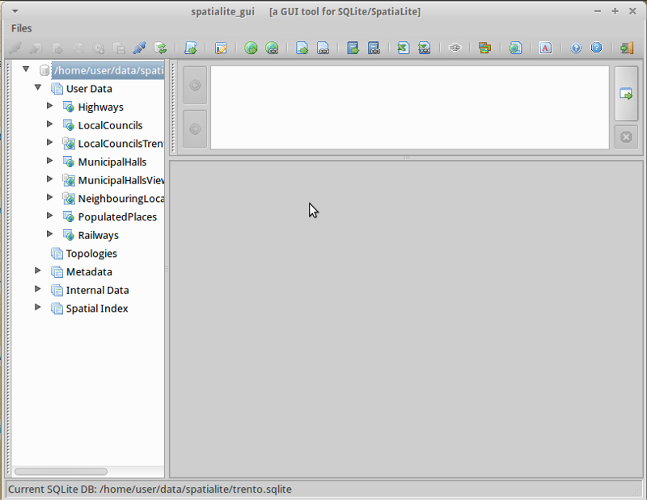

Guida rapida SptiaLite¶
SpatiaLite è un motore di database SQLite con funzioni spaziali aggiunte.
SQLite è un sistema di gestione database (DBMS) semplice, robusto, facile da usare e molto leggero. Ogni database SQLite è un semplice file. Potete copiarlo liberamente, comprimerlo e portarlo su Windows, Linux, MacOs ecc.
Questa Guida Rapida descrive come aprire un database spatialite sia dalle applicazioni GUI che dalla linea di comando. Vengono mostrate alcune query SQL di esempio.
Contenuti
Avvia Spatialite e carica un database¶
Spatialite-gui fornisce un’interfaccia grafica per visualizzare e mantenere un database spatialite. Puoi facilmente vedere la struttura delle tabelle e il contenuto dei dati usando funzioni «punta e clicca», molte delle quali costruiscono comuni query SQL, o creare le tue query SQL.
Apri la GUI di Spatialite selezionando .
Seleziona
Naviga fino alla directory
/home/user/data/spatialitee sceglitrento.sqlite.Clicca con il tasto destro del mouse sulla tabella MunicipalHallsView e seleziona «Show Columns»

Notare lo schermo diviso in 3 aree:
Il pannello sinistro mostra la gerarchia del database, come una lista di tabelle e colonne all’interno della tabella. Fai clic con il tasto destro del mouse sugli elementi del pannello sinistro per selezionare da una lista di azioni comuni del database.
Il pannello in alto a destra mostra l’SQL per l’azione selezionata. Puoi inserire il tuo SQL personalizzato in questo pannello.
Il pannello in basso a destra mostra i risultati della interrogazione SQL.
Clicca con il tasto destro sulla tabella MunicipalHalls e seleziona «Edit table rows». Nota la interrogazione SQL che è stata creata per te nel pannello in alto a destra, e i risultati in basso a destra.:
SELECT ROWID, "PK_UID", "AREA", "PERIMETER", "COMU", "Geometry" FROM "MunicipalHalls" ORDER BY ROWID
{kind=link}
Eseguire una query SQL¶
Ora prova a modificare questa istruzione SQL per ottenere NOME e (Lat,Long) solo per i campi NOME_PROV includendo «BRESCIA», questa volta usando la MunicipalHallsView. Nel riquadro SQL in alto a destra digita:
SELECT NOME, X(Geometry) AS Longitude, Y(Geometry) AS Latitude FROM "MunicipalHallsView" WHERE NOME_PROV LIKE "BRESCIA";
Clicca il pulsante «Execute SQL» sulla destra (Tasto F5), e vedi i risultati nel pannello in basso a destra.

Lancia spatialite da linea di comando¶
Gli utenti che hanno bisogno di script o di automatizzare le query impareranno i vantaggi di lavorare con un database spatialite dall’interfaccia della linea di comando. In questo esempio, caricherai uno shapefile e cercherai le scuole che si trovano vicino all’autostrada 42.
Prima di lavorare dalla linea di comando, devi aprire una finestra di terminale: .
Nel terminale apri un database di esempio con spatialite digitando:
spatialite /home/user/data/spatialite/trento.sqlite
Comandi utili dalla linea di comando:
.help .tables .quit
Crea un nuovo database spatialite e carica uno shapefile¶
Crea un nuovo database spatialite vuoto e carica due shapefile dal dataset north_carolina:
user@osgeo-6:~$ spatialite test.sqlite SpatiaLite version ..: 5.0.0 Supported Extensions: - 'VirtualShape' [direct Shapefile access] - 'VirtualDbf' [direct DBF access] - 'VirtualText' [direct CSV/TXT access] - 'VirtualGeoJSON' [direct GeoJSON access] - 'VirtualXL' [direct XLS access] - 'VirtualNetwork' [Dijkstra shortest path - obsolete] - 'RTree' [Spatial Index - R*Tree] - 'MbrCache' [Spatial Index - MBR cache] - 'VirtualFDO' [FDO-OGR interoperability] - 'VirtualBBox' [BoundingBox tables] - 'VirtualSpatialIndex' [R*Tree metahandler] - 'VirtualElementary' [ElemGeoms metahandler] - 'VirtualRouting' [Dijkstra shortest path - advanced] - 'VirtualKNN' [K-Nearest Neighbors metahandler] - 'VirtualGPKG' [OGC GeoPackage interoperability] - 'SpatiaLite' [Spatial SQL - OGC] - 'VirtualXPath' [XML Path Language - XPath] PROJ version ........: Rel. 6.3.1, February 10th, 2020 GEOS version ........: 3.9.0-CAPI-1.16.2 RTTOPO version ......: 1.1.0 TARGET CPU ..........: x86_64-linux-gnu the SPATIAL_REF_SYS table already contains some row(s) SQLite version ......: 3.31.1 Enter ".help" for instructions SQLite version 3.31.1 2020-01-27 19:55:54 Enter ".help" for instructions Enter SQL statements terminated with a ";" spatialite> spatialite> .loadshp data/north_carolina/shape/schools_wake schools utf-8 3358 spatialite> .loadshp data/north_carolina/shape/roadsmajor roads utf-8 3358Nota il formato del comando .loadshp: prima lo shapefile senza estensione .shp, poi il nome della nuova tabella spatialite, poi la codifica dei caratteri e infine il codice EPSG del SR dello shapefile.
Ora interroga le scuole vicino all’autostrada 42.:
spatialite> SELECT s.NAMESHORT, s.ADDRNUMBER, s.ADDRROOT ...> FROM schools AS s, roads AS r ...> WHERE r.ROAD_NAME = "NC-42" AND ...> ST_Distance(s.Geometry, r.Geometry) < 1000; FUQUAY-VARINA|6600|Johnson Pond Rd WILLOW SPRINGS|6800|Dwight Rowland Rd FUQUAY-VARINA|109|N Ennis St LINCOLN HEIGHTS|307|Bridge St
Infine, emetti la query in un file di testo «valori separati da virgola» «scuole_rt42.txt» con i seguenti comandi:
spatialite> .mode csv spatialite> .output "schools_rt42.txt" spatialite> SELECT s.NAMESHORT, s.ADDRNUMBER, s.ADDRROOT ...> FROM schools AS s, roads AS r ...> WHERE r.ROAD_NAME = "NC-42" AND ...> ST_Distance(s.Geometry, r.Geometry) < 1000; spatialite>.q
Cose da provare¶
Ecco alcune sfide aggiuntive da provare:
Ispezionare le geometrie con spatialite-gui
Apri e modifica i layer di SpatiaLite in QGIS
E ora?¶
Per saperne di più su SpatiaLite, un punto di partenza è la Pagina del progetto SpatiaLite.
Assicurati di visitare il magnifico tutorial Spatialite cookbook